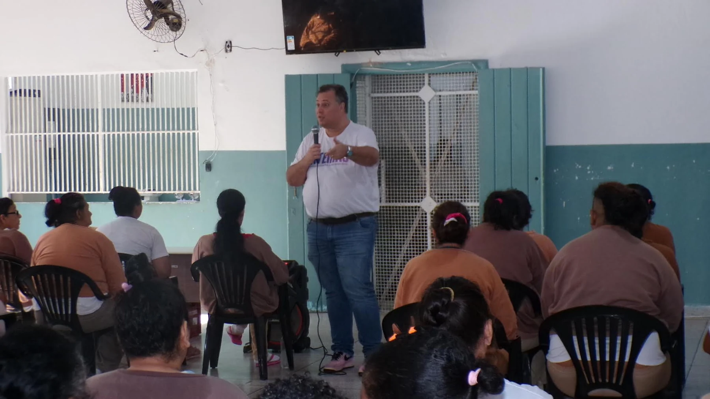
Humanização é
um direito humano.
Desenvolvimento humano em virtudes e humanização dos sistemas em que as pessoas vivem.
Desenvolver pessoas. Humanizar sistemas.
Do funcionamento humano às estruturas que organizam a vida em sociedade.
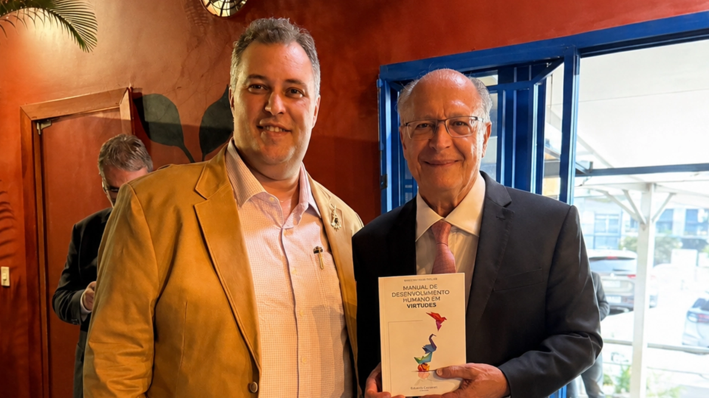
Geraldo Alckmin Vice-presidente da República 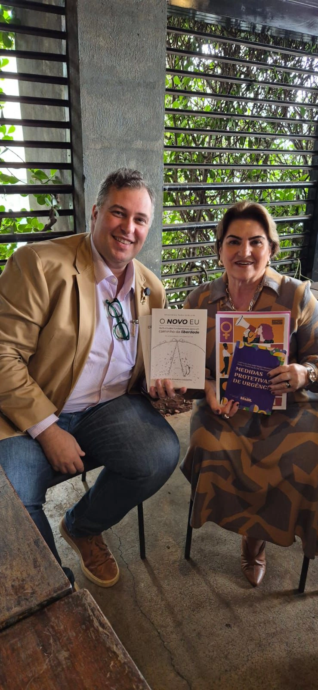
Márcia Lopes Ministra das Mulheres 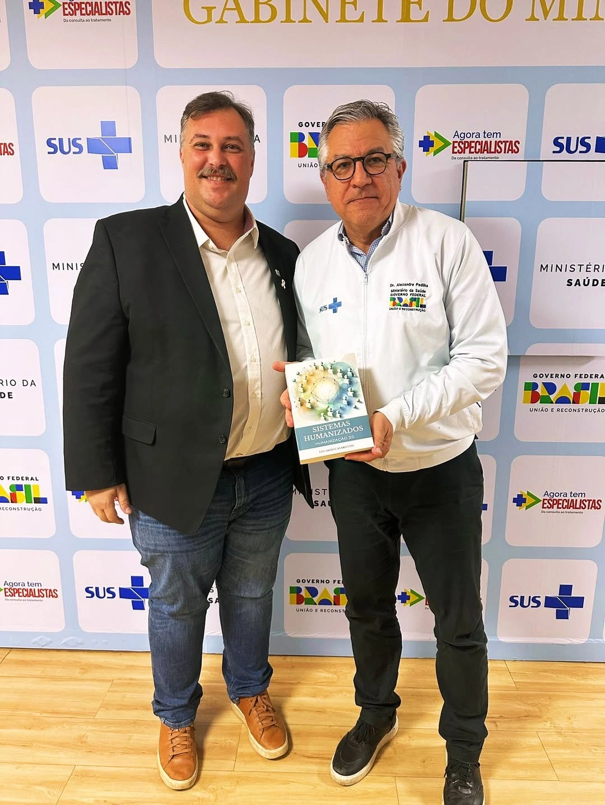
Alexandre Padilha Ministro da Saúde 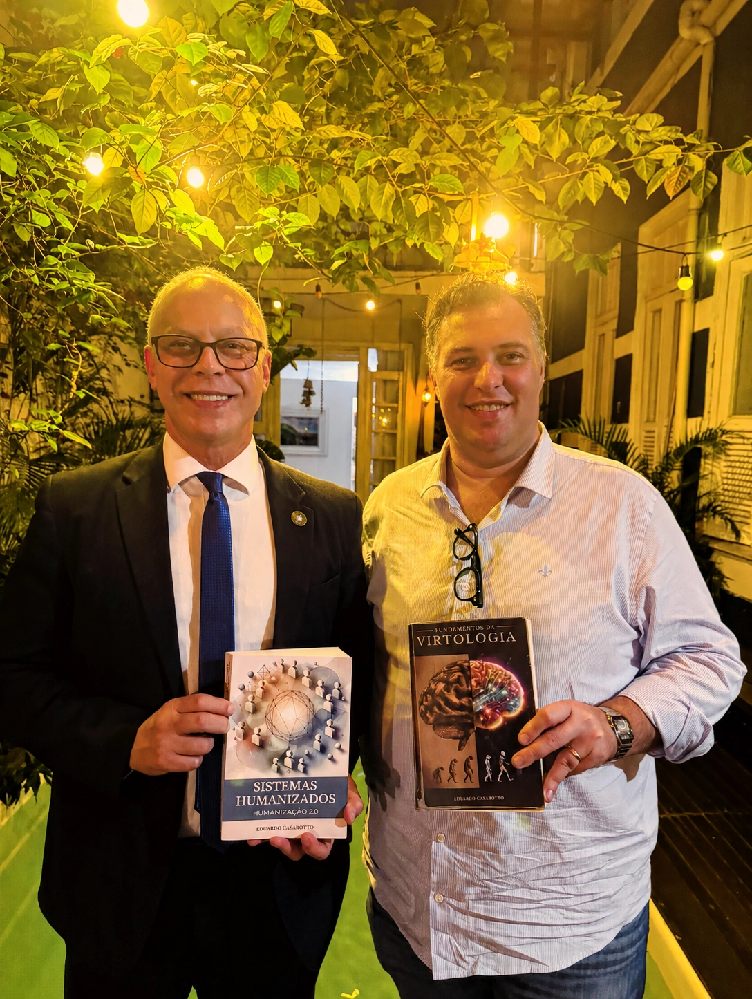
Victor Cesar Carvalho dos Santos Secretário de Segurança Pública do RJ 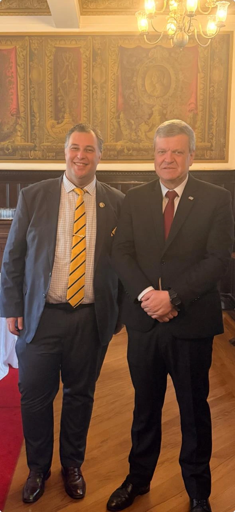
Marcello Streifinger Secretário da Administração Penitenciária de SP 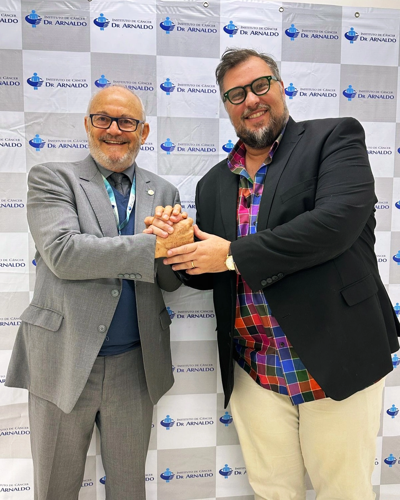
Dr. David Vieira da Costa Presidente do Instituto de Câncer Dr. Arnaldo Vieira de Carvalho
Humanização é
compromisso público.
Humanizar também é participar das decisões que organizam a vida em sociedade. O Humanar leva a Virtologia e a Humanização 2.0 ao diálogo com comunidades, instituições e poder público, aproximando formação humana, dignidade e responsabilidade coletiva. Nosso compromisso é humanitário e apartidário, com propostas para colocar as pessoas no centro da vida pública.
Nesses encontros, Eduardo Casarotto leva as causas humanitárias do Humanar ao diálogo com lideranças e instituições.

Virtudes que se
tornam prática.
O Novo Eu e as frentes de formação do Humanar levam o conhecimento da Virtologia a percursos de desenvolvimento, com estudo, exercícios e aplicação no cotidiano.
Conheça nossos projetosConhecimento em ação.
Dignidade em cada contexto.
No sistema penitenciário e judiciário, com crianças e famílias e no campo da saúde mental e das dependências: conheça os registros e as cooperações do Humanar.
Conheça o trabalho realizado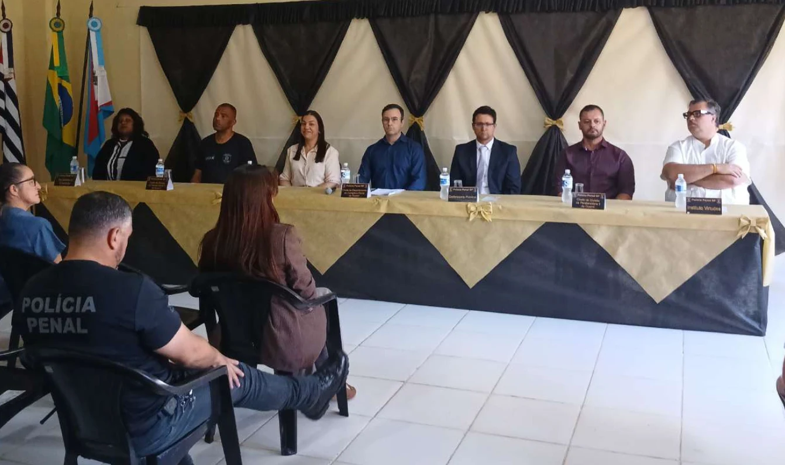
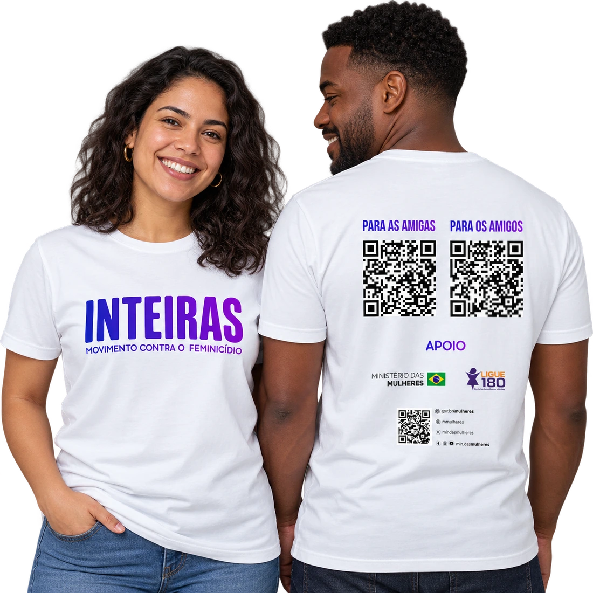
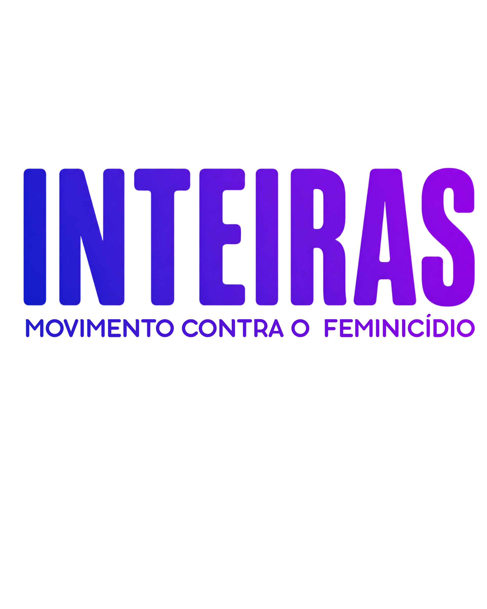
Pela vida das mulheres.
Por relações mais livres.
Um movimento contra o feminicídio que conecta desenvolvimento humano, autonomia e responsabilidade. A camiseta abre dois percursos formativos gratuitos: um para mulheres, outro para homens.
Conheça o movimento Inteiras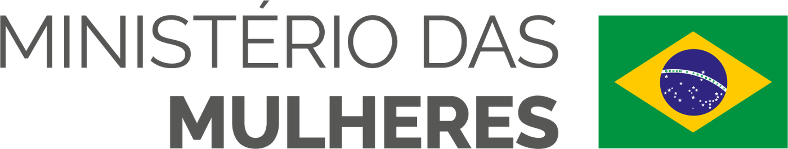
O país que queremos
começa nas pessoas.
Uma mobilização por um Brasil mais humano, a partir da Virtologia e da Humanização 2.0. No livro Brasil Soberano, Eduardo Casarotto reúne propostas para educação, gestão pública, prevenção da violência e reintegração social.
Eduardo Casarotto · 271 páginas · PDF gratuito · 3,6 MB
Alinhamento do Humanar aos ODS da ONU
Nossa atuação se conecta à Agenda 2030 pela formação humana, pela prevenção da violência e pela cooperação com comunidades e instituições.
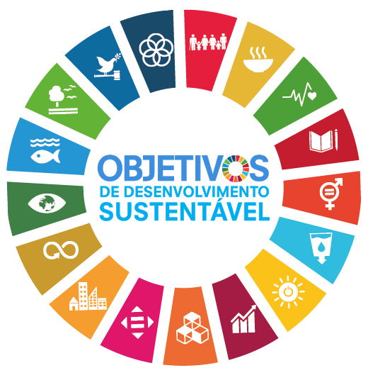
-
ODS 4 · Educação de qualidade
Meta 4.7A formação em Virtologia aproxima desenvolvimento humano, direitos humanos, cidadania e cultura de paz em diferentes contextos educativos e comunitários.
-
ODS 3 · Saúde e bem-estar
Meta 3.4O desenvolvimento humano na atuação do Humanar se articula à promoção da saúde mental e do bem-estar em comunidades e instituições.
-
ODS 5 · Igualdade de gênero
Meta 5.2O Inteiras atua na prevenção da violência contra mulheres e meninas, com percursos de formação em autonomia, igualdade e responsabilidade.
-
ODS 16 · Paz, justiça e instituições eficazes
Objetivo 16A atuação em unidades prisionais e o diálogo institucional articulam dignidade humana, reintegração social, cultura de paz e responsabilidade coletiva.
-
ODS 17 · Parcerias e meios de implementação
Meta 17.17As cooperações com organizações, comunidades e poder público reúnem conhecimentos e recursos para ampliar o acesso ao desenvolvimento humano em diferentes territórios.
Conhecimento e cooperação
para transformar realidades.
Sua instituição pode fazer parte desse trabalho.